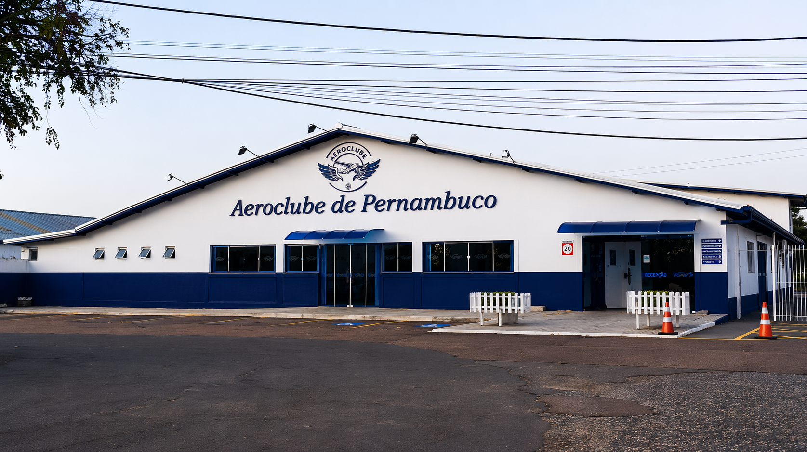

Centro de Instrução de Aviação Civil – CIAC, o Aeroclube de Pernambuco foi fundado em 2026 por entusiastas da aviação nordestina, com o objetivo de democratizar o acesso à formação aeronáutica no estado. Desde sua fundação, a instituição se consolidou como referência em ensino de aviação civil no Nordeste do Brasil.
A história do Aeroclube de Pernambuco nasce do sonho de tornar os céus do Nordeste acessíveis a todos. Pilotos civis, instrutores experientes e apaixonados pela aviação se uniram para criar uma escola que oferecesse formação de qualidade, aliando tradição aeronáutica à identidade e ao clima favorável da região pernambucana.
Durante dezoito anos, após o primeiro voo de um avião sobre Caruaru, os pilotos civis e militares graciosamente em aviação, com orientação, apenas do Aeroclube Brasileiro, fundado em 1911. Somente em 1932, surgiu o Aeroclube do Paraná, ao mesmo tempo em que se organizava a aviação Militar. Por ser facilitada aos militares a participação como associados do Aeroclube, muitos deles fizeram e outros ainda fazem parte do seu quadro associativo, colaborando como professores ou instrutores.
Por outro lado, por ser uma entidade sem fins lucrativos, a sua diretoria não recebe remuneração alguma. Os diretores que prestam serviços nas suas horas de lazer, o fazem por puro diletantismo.
CIAC – Centro de Instrução de Aviação Civil, o qual o AEROCLUBE DE PERNAMBUCO é certificado pela ANAC para atuar na Formação Teórica e Prática de Piloto de Avião e Helicóptero (teórico), Mecânico de Manutenção Aeronáutica nas categorias Básica, Célula, Aviônicos e Motopropulsor, Comissário de Voo e Instrutor de Voo.
O Aeroclube de Pernambuco conta também com um restaurante e uma área externa totalmente aberta ao público com visualização para a pista de pouso e decolagem das aeronaves.
